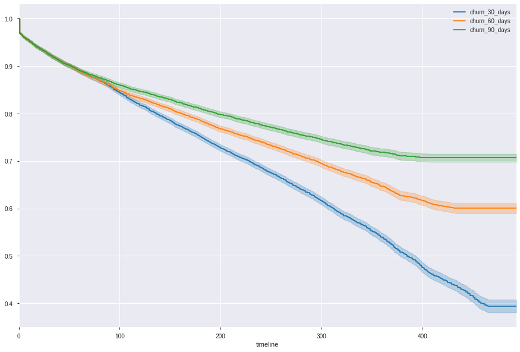
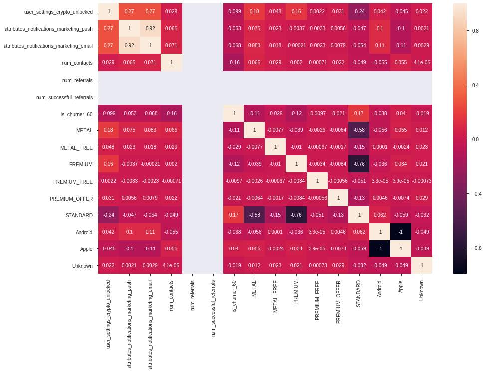
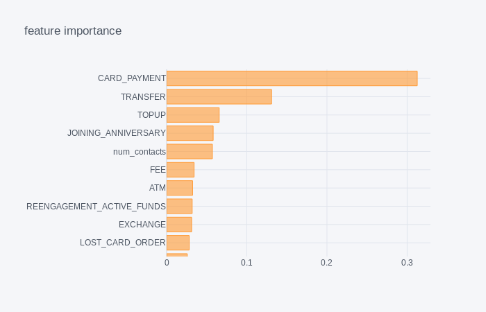

<!DOCTYPE html>
<html lang="en">
  <head>
    <meta charset="utf-8" />
    <meta name="viewport" content="width=device-width, initial-scale=1.0, maximum-scale=1.0, user-scalable=no" />

    <title>reveal-md</title>
    <link rel="stylesheet" href="./css/reveal.css" />
    <link rel="stylesheet" href="./css/theme/solarized.css" id="theme" />
    <link rel="stylesheet" href="./css/highlight/monokai-sublime.css" />
    <link rel="stylesheet" href="./css/print/paper.css" type="text/css" media="print" />

  </head>
  <body>
    <div class="reveal">
      <div class="slides"><section  data-markdown><script type="text/template"># 28 * 💳

<h3 class="fragment" data-fragment-index="1">=</br>
1 new long term <b>engaged</b> Revolut customer  
</h3>
</script></section><section  data-markdown><script type="text/template">
# Engaged ?
</script></section><section ><section data-markdown><script type="text/template">
>An **engaged** customer is an active user  
>having done **outside directed transaction**  
>on the **last two months**.
</script></section><section data-markdown><script type="text/template">

</script></section></section><section  data-markdown><script type="text/template">
# Beat the churn !
<p class="fragment" data-fragment-index="1">A model to detect churners</p>
<p class="fragment" data-fragment-index="2">which allows us to take actions against it</p>
</script></section><section ><section data-markdown><script type="text/template">
## Business actionnable features
</br>
</br>

| features         | is suggestible?    |
|----------------:|:------------------:|
| `card_payment`  | <p class="fragment" data-fragment-index="1">✅</p>                  |
| `device_brand`  | <p class="fragment" data-fragment-index="2">❎</p>                  |
</script></section><section data-markdown><script type="text/template">

</script></section></section><section  data-markdown><script type="text/template"><!-- .slide: data-background="misc/rev_tree.png" -->
# Model
</script></section><section ><section data-markdown><script type="text/template">
## Simple, transparent and robust : Decision Tree

<p class="fragment" data-fragment-index="1">Actual feature treshold value (not scaled)</p>
<p class="fragment" data-fragment-index="2">Explainable for both the global model and the user scale decision</p>
<p class="fragment" data-fragment-index="3">&#8771;80% accuracy</p>
<h3 class="fragment" data-fragment-index="4">Full control given to marketing teams</h3>
</script></section><section data-markdown><script type="text/template">
- Over sampling using SMOTE
- Feature importance :  

</script></section></section><section  data-markdown><script type="text/template">
# Test
</script></section><section  data-markdown><script type="text/template">
# Next step

- go deeper into survival analysis (compare survival function between different cohorts)
- behavior in addition of transactionnal actions
</script></section></div>
    </div>

    <script src="./js/reveal.js"></script>

    <script>
      function extend() {
        var target = {};
        for (var i = 0; i < arguments.length; i++) {
          var source = arguments[i];
          for (var key in source) {
            if (source.hasOwnProperty(key)) {
              target[key] = source[key];
            }
          }
        }
        return target;
      }

      // Optional libraries used to extend on reveal.js
      var deps = [
        { src: './plugin/markdown/marked.js', condition: function() { return !!document.querySelector('[data-markdown]'); } },
        { src: './plugin/markdown/markdown.js', condition: function() { return !!document.querySelector('[data-markdown]'); } },
        { src: './plugin/highlight/highlight.js', async: true, callback: function() { hljs.initHighlightingOnLoad(); } },
        { src: './plugin/zoom-js/zoom.js', async: true },
        { src: './plugin/notes/notes.js', async: true },
        { src: './plugin/math/math.js', async: true }
      ];

      // default options to init reveal.js
      var defaultOptions = {
        controls: true,
        progress: true,
        history: true,
        center: true,
        transition: 'default', // none/fade/slide/convex/concave/zoom
        dependencies: deps
      };

      // options from URL query string
      var queryOptions = Reveal.getQueryHash() || {};

      var options = extend(defaultOptions, {}, queryOptions);
    </script>


    <script>
      Reveal.initialize(options);
    </script>
  </body>
</html>
